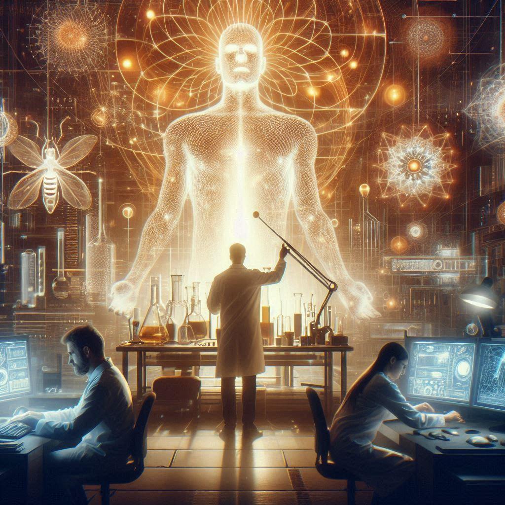

科幻故事 | 咖啡留香：一次关于意识上传的实验记录
2024-11-05 by Vincent Ping
死亡这种事，大概不会有人觉得好笑。
但我现在就很想笑。因为躺在隔离舱里的李元，这位即将离世的天才物理学家，正在跟一个投影聊天。准确地说，是在跟自己的意识投影聊天。
而更可笑的是，我们这群量子物理实验室的研究员，正襟危坐地记录着这场诡异的对话。仿佛这样就能显得自己很专业似的。
"波形出现异常。"陈安的声音从实验室另一端传来。她今天穿了件李元最喜欢的红色高领毛衣。没人说破，但我们都知道这是她对老师的某种告别。
我看着监测屏。李元的脑波数据像是喝醉了的醉汉，歪歪扭扭地在坐标系里游走。这是今天的第七次尝试，自从三天前李元同意这项实验起，我们已经进行了二十三次数据采集。
维生舱里的营养液泛着幽蓝的光。透过钢化玻璃，能看到李元消瘦的身体。他的大脑里，那团该死的肿瘤正在以每天百分之二的速度扩张。按照PET扫描的结果，他最多还能撑两周。
"继续记录。"我低头在记录本上写下时间：2041年4月15日，下午3:47。笔尖有点发抖。
不知道是不是错觉，自从加入这个意识上传项目，我写字的时候总是会抖。可能是因为知道自己在做一件可能改变人类历史，也可能会被钉在耻辱柱上的事情。
一个月前，当李元走进我的办公室说要参加实验时，我是拒绝的。
"为什么不呢？"他笑着问我，"我快死了，张鸣。这是我最后的机会。"
"但您知道之前的失败案例。"我说。
他当然知道。两千多个失败案例，每一个都写进了科学伦理委员会的黑名单。媒体把这个项目称为"数字版的克隆人实验"。
"所以我才来找你。"他说，"我的学生里，就你最没有科研道德。"
我差点被咖啡呛死。
"您别开玩笑了。"
"我说真的。"他认真地看着我，"你还记得你的博士论文答辩吗？所有人都说你的实验方法太冒险，只有我支持你。因为我知道，真正的科学家，就该敢于冒险。"
我记得。那篇论文差点害我丢掉博士学位。要不是李元力挺，我现在可能在快餐店煎汉堡。
"陈安会反对的。"我说。这是我能想到的最后一个理由。
"她已经同意了。"李元说，"而且她会全程协助实验。"
我看着他布满血丝的眼睛。那里面有种令人心悸的东西，叫做希望。
最终我同意了。不是因为他的说服，而是因为那副眼神。临死前还想为科学做贡献，这种精神不正是他当年教给我的吗？
实验室里的气氛一如既往的压抑。每个人都在装作很忙，但我知道他们都在偷瞄那个维生舱。人类就是这样，再专业的科研人员在死亡面前也会露出八卦的本性。
"张鸣，你得看看这个。"陈安指着另一块屏幕。她的手指有些发抖，这在平时是不可能的。陈安是我见过最冷静的研究员，平时就算是观测到最离奇的量子态叠加现象，她也能面不改色地做完全部记录。
但现在不一样。躺在那里的是李元，是她敬爱的导师，是把她从贫民窟带到实验室的恩人。
监视器上显示着李元的脑活动图谱。某些区域正以一种诡异的频率闪烁，就像是深海里的发光生物。
"他在...思考？"我不确定地说。这种模式我们从未见过，它不该出现在一个脑部肿瘤患者身上。
"不止是思考。"陈安放大了图像，声音里带着一丝颤抖，"看这个模式，他在重构自己的意识。"
我下意识地摸了摸胸口的项链。那是李元在我博士毕业时送的，一个镶着DNA双螺旋的银坠。他说这是提醒我永远记住生命的密码。
可现在，我们眼前的东西已经超出了DNA能解释的范围。
"调出他的实时反馈。"我说。声音干涩得像是被真空干燥过。
全息投影缓缓成形。起初只是一团模糊的光雾，渐渐地，李元的数字化身出现了。但不太对劲，他看起来像是被困在量子叠加态里，形体时而清晰时而模糊。
记得上周他还在开玩笑："要是实验成功，我就是第一个能参加自己葬礼的人。"
那时我们都笑了。现在想来，那笑声比哭还难听。
"我能...听到你们。"李元的声音断断续续地传来，像是穿越了时空的电波，"但这里...很奇怪。我看到了...另一个自己。"
陈安猛地抓住了我的手腕。她的指甲深深陷入我的皮肤，但我一点也不觉得疼。因为这是历史性的时刻——第一次，一个意识上传者在过程中保持了交流能力。
"能描述一下吗？"我强迫自己用最平静的语气提问。这是科研人员的职业习惯，越是激动的时候越要表现得冷静。
"我在...重新认识自己。"李元说，"就像...在重新学习如何思考。但每次我即将抓住某个记忆，它就会...变形。好像在玩一个永远赢不了的拼图游戏。"
这个比喻真像李元的风格。他总是能把最复杂的概念用最简单的方式解释。这大概就是为什么他能拿到三次诺贝尔提名——虽然最后一次是在他确诊脑瘤之后。
"意识完整度在下降。"陈安的声音打断了我的思绪。她松开了我的手腕，那里已经留下了五个深深的月牙形印记。
"百分之八十...七十五...六十八..."数字像是生命倒计时一样不断下跌。
我看了眼维生舱里的李元。他的身体很平静，仿佛只是在做一个普通的午睡。但连接他大脑的导管里，信号灯正在疯狂闪烁。
如果指数降到百分之五十以下，就意味着实验失败。李元的意识会永远迷失在数据的海洋里，成为第2049个失败案例。这个数字像是诅咒一样印在每个项目成员的脑子里。
"等等。"陈安突然说。她的声音里带着一种我从未听过的东西，像是惊恐，又像是狂喜。
监控屏上的数据让我们目瞪口呆。李元的意识完整度确实在下降，但新的神经连接正在以一种违背物理学的速度形成。就像是一个人在坠落的同时学会了飞翔。
这画面让我想起李元最后一次做实验报告。那是在他确诊后的第三天，本该躺在病床上打吗啡的人，非要穿着褪色的格子衬衫站在讲台上。
"意识不是一个静态的存在，"他说，"它更像是一条永远流动的河。我们以为能复制意识，就像以为能复制一条河。但河水每时每刻都在变化，你永远无法踏入同一条河流。"
当时我们都以为这是吗啡造成的副作用。现在看来，那个混蛋早就想到了这一切。
"这不可能。"我喃喃自语。按照我们对人工智能的理解，意识应该是固定的、可定义的。但李元正在证明，这些理解也许都是狗屁。
实验室的温度在升高。量子计算机群的散热系统发出不堪重负的呜咽。陈安脱掉了她那件红色毛衣，露出里面的白色衬衫。衬衫后背已经被汗水浸透。
没人在意这些。我们都盯着全息投影中李元那分裂又融合的身影。他看起来就像是量子世界中的薛定谔猫，同时处于存在与不存在的状态。
"张鸣...陈安..."李元的声音突然变得清晰，像是从迷雾中走了出来，"我明白了。我们一直在犯一个错误。"
"什么错误？"
这时实验室的门开了。两个政府观察员走了进来。他们穿着一模一样的黑西装，戴着一模一样的黑框眼镜，像是从同一个模子里倒出来的。
我讨厌这些家伙。他们总是在最关键的时候出现，仿佛闻到了什么重大发现的味道。
"我们收到能源波动警报。"其中一个说，"请解释当前状况。"
去你妈的解释。我在心里骂了一句，但表面上还是保持着职业微笑："常规测试，有一些预期内的数据波动。"
他们对视一眼，显然不相信。但在他们能说什么之前，李元的声音再次响起。
"我们不能复制意识，因为每个意识本身就是独一无二的。我们能做的，是创造一个新的意识，一个基于原始意识但又独立存在的个体。"
这话让两个观察员瞬间绷紧了身体。他们掏出记录本，开始疯狂记录。见鬼，这些混蛋总是对最危险的信息最敏感。
但已经来不及阻止了。警报声突然响起，尖锐得像是来自地狱的尖叫。
"服务器过载！"陈安的声音里带着恐慌，"他的数据量正在指数级增长！"
我看着显示屏。李元的数字化身开始分裂，像是一滴墨水滴入水中。起初是两个，然后是四个、八个...每一个都是李元，却又都略有不同。
那两个观察员疯狂地按着他们的通讯器，大概是在向上级报告。但谁在乎呢？我们正在见证的是人类历史上最伟大的时刻之一。
"有趣。"李元的声音同时从几个化身中传出，像是一首诡异的交响乐，"我同时存在于多个维度，每一个都是我，但又都不完全是我。这感觉...就像是终于理解了薛定谔的猫。"
即使在这种时候，这个老混蛋还在开物理学的玩笑。
维生舱里，李元的身体突然抽搐了一下。监测仪上的生命体征开始波动，像是一张被揉皱的五线谱。
"心跳过速！"陈安冲向维生舱，"需要注射镇静剂！"
"不！"我拦住她，"这可能会影响意识上传！"
陈安瞪着我，眼睛里噙着泪水："可是他会死！"
"他本来就快死了。"我说。这话像刀子一样割着我的喉咙，"但现在，他可能会活下来。以另一种方式。"
那两个观察员终于按捺不住了。其中一个掏出了紧急终止器："实验必须停止！这已经超出了安全范围！"
我挡在控制台前："你们敢！"
陈安也站了过来。她瘦小的身体挡在维生舱前，像是一只保护幼崽的母兽。
"你们疯了！"观察员吼道，"这违反了所有安全协议！"
"去你妈的安全协议！"我也吼了回去，"你们根本不明白这意味着什么！"
就在这剑拔弩张的时刻，李元的声音再次响起。但这次不是从扬声器里，而是直接在我们的脑海中。
"我现在明白了存在的本质。"他说，声音里带着一种超然的平静，"意识不是被给予的，而是不断创造的。每一个想法，每一个选择，都在重塑着我们是谁。就像...就像量子叠加态。在被观测之前，所有的可能性都是真实存在的。"
服务器开始自动关闭，发出像濒死动物一样的哀鸣。散热系统完全罢工，实验室里的温度高得像个蒸笼。
但没人在意这些。我们都被李元最后的话镇住了。
那两个观察员面面相觑，他们引以为豪的官僚作风第一次出现了裂痕。
"也许..."其中一个犹豫着说，"我们应该完整记录这个过程？"
废话。我在心里翻了个白眼。就知道这些家伙永远不会放过任何可能立功的机会。
监测仪上，李元的意识完整度最终停在了99%。
不是100%。永远不可能是100%。因为意识本身就是不完整的，它永远在生长，永远在变化。就像李元说的，这才是存在的本质。
维生舱里，李元的身体渐渐平静下来。心电图画出最后一条直线。
2051年4月15日，下午5:23分，物理学家李元教授临床死亡。
同一时刻，另一个李元诞生在量子计算机的网络中。
一周后，我坐在实验室里，面前是一堆需要签字的文件。
死亡证明、实验报告、保密协议......还有李元的遗嘱。
遗嘱是他在实验前就准备好的。里面只有简单的几行字：
"我的身体捐献给科学研究。我的财产捐给贫困学生基金会。至于我的意识......就让它继续探索这个宇宙吧。"
最后一句话让伦理委员会的人纠结了好几天。他们不知道该怎么定义李元现在的状态——死了吗？没有。活着吗？也算不上。
"那个混蛋。"陈安放下咖啡杯，"他一定早就计划好了这一切。"
她说得对。从他主动申请实验的那一刻起，一切就都在他的计算之中。包括利用自己的死亡来推动这项研究。
典型的李元式操作。
量子服务器依然在运行。李元的意识，或者说他的进化版本，始终活跃在数据流中。我们尝试过与他沟通，但得到的都是一些超出理解范围的信息。
好像一旦突破了肉体的限制，意识就会像星星一样不断膨胀，最终远离我们能理解的范畴。
那两个观察员每天都来报到，像跟踪狂一样记录着每一个数据波动。他们可能以为自己在见证历史，但在我看来，他们不过是在记录自己的无知。
"这杯咖啡，"陈安突然说，"是李元最喜欢的配方。"
我愣了一下。确实，这是李元特制的配方——浓缩咖啡加上一点肉桂粉。他说这能让大脑保持最佳状态。
"你知道吗？"陈安盯着杯子，"他生前最后一次喝咖啡，是在决定参加实验的那天。"
我点点头。那天他端着咖啡，跟我们讨论实验细节，就像是在讨论明天的天气。
"他说，"陈安的声音有点哽咽，"如果实验成功，他要请我们喝最贵的咖啡。如果失败......"
她没说完。但我知道后半句。
如果失败，就在他的葬礼上，喝最后一杯他配的咖啡。
可现在呢？实验算成功还是失败？李元算是生还是死？这杯咖啡，算是庆功还是祭奠？
正想着，服务器突然发出一声轻响。
监控屏上出现了一行字：
"咖啡放这么久，肉桂粉的香气都散了。"
陈安的杯子啪的一声掉在地上。
我们目瞪口呆地看着屏幕。字迹一点点浮现，就像是有人在慢慢写字：
"别那么紧张，年轻人。意识的存在形式有很多种。我只是选择了一种你们暂时无法理解的方式。对了，那份实验报告，关于意识完整度的分析有点问题......"
我看着陈安。她的眼泪终于落了下来。
那两个观察员像疯了一样冲向记录本。但我已经不在乎了。
我只知道，此时此刻，在某个我们无法理解的维度里，李元依然是李元。他可能正在经历着一场我们无法想象的进化，就像一颗恒星在绽放它最后的光芒。
而我们这些被留在地球上的人，除了继续研究、记录和思考，又能做什么呢？
我拿起咖啡杯，轻轻抿了一口。
咖啡已经凉了，但肉桂的香气依然在。
就像李元，明明已经离开，却又以另一种方式存在。
这大概就是意识的奇妙之处——它永远不会真正消失，只是不断地重构自己，在时间的长河中永远流淌。
我打开电脑，开始修改那份实验报告。
也许，人工智能的终极目标不是模仿人类，而是帮助我们理解：什么才是真正的意识。
而李元，这个倔强的老混蛋，用他的方式给出了答案。
只是这个答案，可能要等很多年后，我们才能真正理解。
=====================================
后记：这是我在和AI对话中，和AI一起创作的一篇科幻故事，大致步骤是这样的：
-
我们首先讨论出一个大致的故事梗概
-
然后讨论确定主要人物和主要场景
-
让AI输出一个5000字的故事，然后完善逻辑、剧情发展
-
设定不同的文字风格，让AI进行改写，最终界定使用“庆余年”作者猫腻的写作风格完成。
Tkinter根窗口设置小技巧：程序启动最大化和程序窗口图标设置
介绍Tkinter程序根窗口的设置方法，同时介绍程序启动时窗口最大化和程序窗口图标设置的小技巧。
read moreHello World，编写一个Tkinter程序需要哪些基本步骤？
通过Hello World程序介绍编写Tkinter程序的四个基本步骤：创建并设置根窗口、选择要显示的组件并进行对应设置、组件的布局管理和给组件编写交互功能。
read more孩子运动，是选篮球还是足球？？
篮球和足球都是团体对抗的球类运动，训练方式也相似，对于提高身体素质，培养孩子的对抗意识和团队合作意识很有帮助。但是因为运动形式的差别，篮球更有利于身体的全面锻炼，对孩子长身高有帮助，同时也有利于脑部发育。
read more2020年温针灸足三里筑基记录
2018年的温针灸足三里百次筑基，对我的身体有很大帮助。今年准备再次温针灸足三里，希望经过三伏天，重新百次筑基。6月1号开始第一次，特记录如下。
read morePython自带的GUI库Tkinter是否值得学习？
Python语言可以用在很多方面，网站开发、数据分析、运营维护、游戏开发等等，那么桌面应用程序GUI呢？其实Python标准库里自带Tkinter就是干这个的。相比PyQT、wxPython等等，Tkinter有哪些优势和不足，是否值得学呢？
read more站桩记录2：调身、调气和调心
站桩的过程实际上首先就是“调身”的过程。“下紧上松”，从双脚开始，到膝盖，再到裆部的放松。上半身则要求头部顶悬、下颌微内收；松肩沉肘，双掌环抱。
read more站桩记录1：开始练习站桩
最近看了一些关于站桩的资料，同时也接触了一些师傅，请教了养生的问题，大家都比较推崇站桩。于是决定试试。
read more创意与验证：如何获得好的创意?——Udacity课程《产品设计》学习笔记2
要想有一个好的创业点子，一定要对所做的事情有激情。千万不要只是为了创业而去创业。我们之所以要创业，是因为要解决一个问题，一个会让我们日夜寻思的问题。
read more